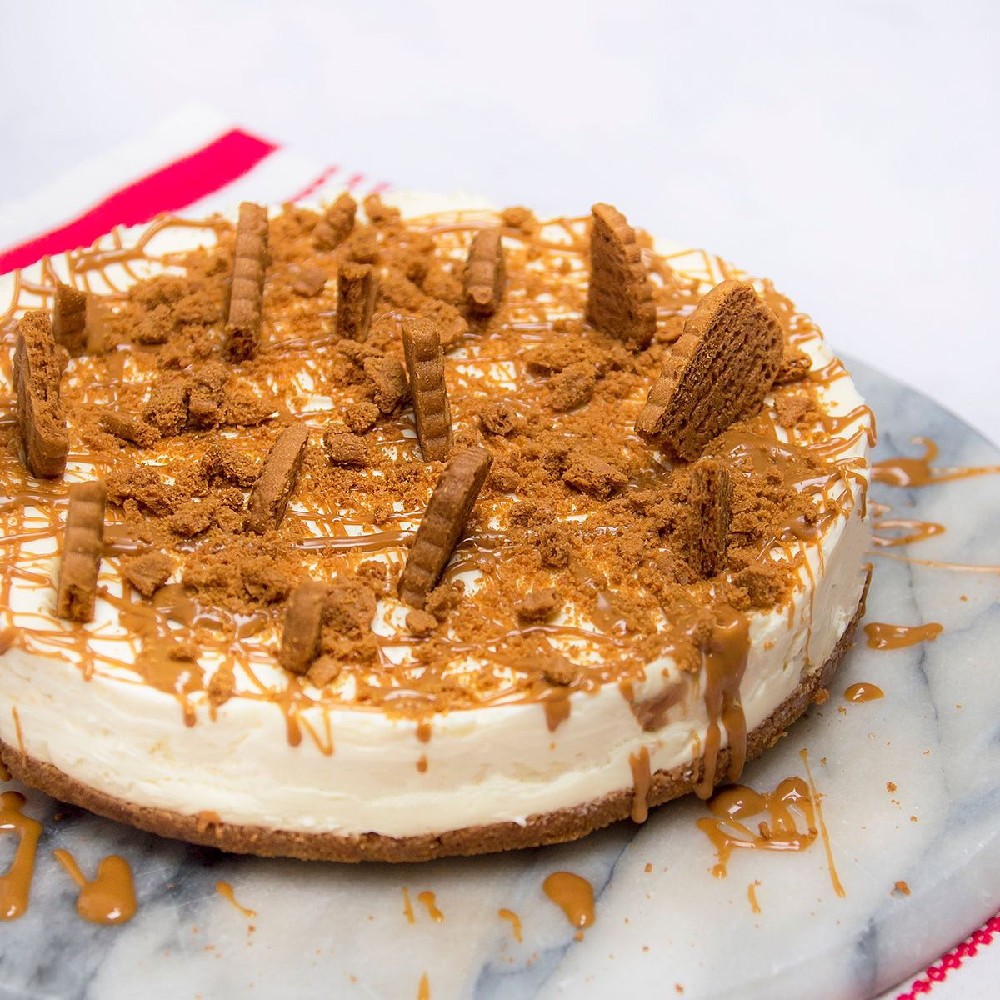

Biscoff Cheesecake

Description
This recipe is a proven, step-by-step guide on how to make a delicious Biscoff Cheesecake.
One for the whole family to enjoy, (If you have a sweet tooth)
Please note, this recipe assumes a 20cm tin.
Ingredients
Base:
- 200g Biscoff Biscuits
- 80g Unsalted Butter
Filling:
- 400g Full Fat Soft Cheese
- 400g Double Cream
- Biscoff Spread
- 150g Icing Sugar
- 1 Tbsp Vanilla Extract
Topping:
- Biscoff Biscuits
- Biscoff Spread
Steps
- Oil a 20cm deep springform cake tin and line with baking parchment.
- Tip the biscuits into the bowl of a food processor and crush or blitz to a fine crumb.
- Mix with the melted butter.
- Then press into the base of the cake tin.
- Chill for 30 mins.
- Beat the soft cheese with the icing sugar and vanilla until just combined using an electric whisk.
- Clean the beaters
- Beat the double cream to Stiff Peaks in a separate bowl.
- Gently fold the whipped cream into the soft cheese mixture Spoon HALF the cheesecake mixture over the biscuit base
- Add a layer of Biscoff Spread
- Spoon the other half of mixture on top.
- Smooth the surface with a palette knife or spatula.
- Chill overnight.
- Carefully release the cheesecake from the tin
- Decorate the topping with a combination of Biscoff spread and biscuits
Return to home page